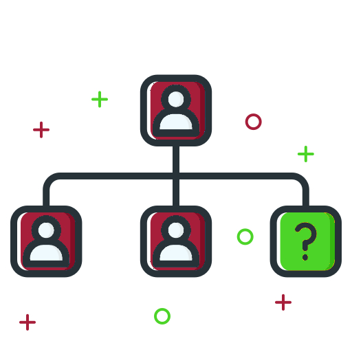

Conditions d'utilisations
Votre utilisation du site web U'Connect, du service U'Connect ou de toute application (y compris les applications mobiles)
mise à disposition par U'Connect (ci-après dénommés collectivement le « Service »), quel que soit le moyen d’accès
employé, indique que vous acceptez les présentes Conditions d’utilisation (les « Conditions d’utilisation »). Ce
Service est la propriété d’U'Connect, LCC (« U'Connect ») qui le contrôle.
Les présentes Conditions d’utilisation définissent vos droits et obligations dans le cadre de la loi. Si vous n’acceptez
pas certaines ou toutes ces Conditions d’utilisation, n’utilisez pas le Service et n’y accédez pas.
Il arrive parfois que nous proposions des fonctionnalités spéciales. Les conditions générales qui les accompagnent s’ajoutent
alors aux présentes Conditions d’utilisation. En cas de conflit avec les présentes Conditions d’utilisation, les
conditions propres à ces fonctionnalités spéciales prévaudront.
AVIS D’ARBITRAGE : SAUF SI VOUS CHOISISSEZ DE NE PLUS BÉNÉFICIER DU SERVICE ET À L’EXCEPTION DE CERTAINS TYPES DE
LITIGES DÉCRITS DANS LA SECTION D’ARBITRAGE CI-DESSOUS, VOUS ACCEPTEZ QUE LES LITIGES ENTRE VOUS-MÊME ET U'Connect
SOIENT RÉGLÉS PAR UNE DÉCISION D’ARBITRAGE INDIVIDUELLE ET CONTRAIGNANTE ET VOUS RENONCEZ À VOTRE DROIT DE PARTICIPER
À UN RECOURS COLLECTIF OU À UN ARBITRAGE COLLECTIF.
Conditions Fondamentales
-
Vous devez être âgé(e) d’au moins 13 ans pour utiliser le Service.
- Vous n’êtes pas autorisé(e) à publier, par le biais du Service, de scènes de nudité partielle ou totale, ni de photo
ou contenu à caractère discriminatoire, illicite, frauduleux, haineux ou pornographique ou sexuellement suggestif.
- Vous êtes responsable de toutes les activités entreprises avec votre compte et vous acceptez de ne pas vendre, transférer,
concéder sous licence, ni attribuer à qui que ce soit votre compte, vos abonnés, votre nom d’utilisateur et les
droits liés à votre compte. Sauf aux personnes ou entreprises expressément autorisées à créer des comptes au
nom de leurs employés ou clients, U'Connect interdit la création de comptes pour autrui. Vous acceptez donc de
ne pas créer de compte pour une tierce personne. Vous affirmez aussi que toutes les informations que vous fournissez
ou avez fournies à U'Connect lors de votre inscription et à tout autre moment sont vraies, précises, actuelles
et exhaustives, et vous acceptez de mettre à jour vos données comme il convient afin d’en conserver l’authenticité
et la précision.
- Vous vous engagez à ne pas solliciter, collecter ou utiliser les identifiants de connexion d’autres utilisateurs
U'Connect.
-
Vous être responsable de la confidentialité et de la sécurité de votre mot de passe.
-
Vous ne devez pas diffamer, poursuivre, intimider, harceler, ni menacer des personnes ou des entités, ni en usurper
l’identité. De plus, vous ne devez pas publier d’informations privées ou confidentielles par le biais du Service
(y compris, mais sans s’y limiter, les coordonnées de carte de crédit, les numéros de sécurité sociale, les numéros
de carte d’identité, les numéros de téléphone privés et les adresses e-mail privées qui vous appartiennent ou
qui appartiennent à des tiers).
-
Vous n’êtes pas autorisé(e) à utiliser ce Service à des fins illicites ou interdites. Vous acceptez de vous conformer
à toutes les lois, règles et réglementations (aux niveaux fédéral, national, régional et local) qui s’appliquent
à votre utilisation du Service et de votre Contenu (tel qu’il est défini ci-dessous), notamment les droits d’auteur.
-
Vous êtes le ou la seule responsable de votre comportement et de l’ensemble des données, textes, fichiers, informations,
noms d’utilisateur, images, graphismes, photos, profils, clips audio et vidéo, sons, œuvres musicales, créations
originales, applications, liens et autres contenus ou supports (ci-après dénommés collectivement le « Contenu
») que vous soumettez, publiez ou affichez sur le Service ou par son intermédiaire.
-
Vous n’êtes pas autorisé(e) à changer, modifier, adapter ou altérer le Service, ni à changer, modifier ou altérer
un autre site web en vue de faire croire qu’il est associé au Service ou à U'Connect.
-
Vous ne devez pas accéder à l’API privée d’U'Connect par une méthode non autorisée par U'Connect. L’utilisation de
l’API d’U'Connect fait l’objet de conditions distinctes.
-
Vous ne devez pas créer ni envoyer d’e-mails, commentaires, mentions J’aime ou autres formes de communications commerciales
non sollicitées ou insistantes (c’est-à-dire du « contenu indésirable ») aux utilisateurs d’U'Connect.
-
Vous n’êtes pas autorisé(e) à utiliser des noms de domaine ou des URL de sites web dans votre nom d’utilisateur sans
la permission écrite préalable d’U'Connect.
-
Vous ne devez pas interférer avec le fonctionnement du Service, des serveurs ou des réseaux connectés au Service,
notamment en transmettant des vers, virus, logiciels espions, logiciels malveillants ou tout autre code de nature
perturbante ou destructrice. Vous ne devez pas injecter de contenu ni de code dans les pages U'Connect, vous
ne devez pas les modifier et vous ne devez pas interférer avec leur fonctionnement ou leur affichage dans le
navigateur ou sur l’appareil des utilisateurs.
-
Vous devez respecter les Règles de la communauté U'Connect.
-
Vous ne devez pas créer de comptes auprès du Service par le biais de méthodes non autorisées, notamment, mais sans
s’y limiter, en utilisant des outils d’accès automatisé (script, robot, araignée, robot d’indexation, etc.).
-
Vous ne devez pas tenter d’empêcher un autre utilisateur d’utiliser le Service ni d’en bénéficier, et vous ne devez
pas encourager ni faciliter des infractions aux présentes Conditions d’utilisation ni aux autres conditions d’U'Connect.
-
Toute infraction à ces Conditions d’utilisation peut entraîner, à la seule discrétion d’U'Connect, la résiliation
de votre compte U'Connect. Vous comprenez et acceptez le fait qu’U'Connect ne saurait être tenu responsable du
Contenu publié sur le Service et que vous utilisez le Service à vos propres risques. Si vous enfreignez la lettre
ou l’esprit des présentes Conditions d’utilisation, ou créez autrement un risque de poursuites à l’encontre d’U'Connect,
nous pouvons cesser de vous fournir tout ou partie du Service.
Conditions générales
-
Nous nous réservons le droit de modifier ou de résilier le Service ou votre accès au Service, pour quelque raison
que ce soit, à tout moment, sans avis préalable et sans responsabilité envers vous. Vous pouvez désactiver votre
compte U'Connect en vous connectant au Service. Si nous résilions
votre accès au Service ou si vous utilisez le formulaire mentionné ci-dessus pour désactiver votre compte, vos
photos, commentaires, mentions J’aime, liens d’amitié et autres données ne seront plus accessibles par le biais
de votre compte (c’est-à-dire que les utilisateurs ne pourront plus accéder à votre espace ni visualiser vos
photos). Ces informations peuvent toutefois être conservées et apparaître dans le Service (notamment si votre
Contenu a été partagé à nouveau par des tiers).
-
Au moment de la résiliation, l’ensemble des licences et des autres droits qui vous ont été accordés dans les présentes
Conditions d’utilisation seront immédiatement annulés.
-
Nous nous réservons le droit de modifier occasionnellement les présentes Conditions d’utilisation (« Conditions mises
à jour »). À moins que les amendements soient dus à des obligations juridiques ou administratives, nous donnerons
aux utilisateurs un préavis raisonnable avant la mise en application des Conditions mises à jour. Vous acceptez
d’être averti(e) des Conditions mises à jour par leur publication sur le Service. Vous reconnaissez également
que votre utilisation du Service après la date de prise d’effet des Conditions mises à jour (ou votre conduite
d’activités telles que définies raisonnablement par nous) signifie votre acceptation des Conditions mises à jour.
Vous devez donc prendre connaissance des présentes Conditions d’utilisation et des éventuelles Conditions mises
à jour avant de commencer à utiliser le Service. Les Conditions mises à jour prendront effet dès leur publication
ou à partir d’une date ultérieure pouvant être spécifiée dans les Conditions mises à jour et elles s’appliqueront
dès lors à votre utilisation du Service. Les présentes Conditions d’utilisation régissent les éventuels conflits
qui pourraient survenir avant la date de prise d’effet des Conditions mises à jour.
-
Nous nous réservons le droit de refuser l’accès au Service à quiconque, quelle qu’en soit la raison et à tout moment.
-
Nous nous réservons le droit de confisquer des noms d’utilisateur, quelle qu’en soit la raison.
-
Nous pourrons, sans y être obligés, supprimer, modifier, bloquer ou contrôler du Contenu ou des comptes contenant
un Contenu que nous jugeons, à notre entière discrétion, en infraction avec les présentes Conditions d’utilisation.
-
Vous êtes seul(e) responsable de votre interaction avec d’autres utilisateurs du Service, en ligne comme hors ligne.
Vous reconnaissez qu’U'Connect n’est pas responsable du comportement des utilisateurs. U'Connect se réserve le
droit, sans y être obligé, de contrôler les éventuels litiges entre vous-même et d’autres utilisateurs, ainsi
que de s’y impliquer. Veillez à faire preuve de bon sens et de jugement lorsque vous interagissez avec des tiers,
notamment lorsque vous soumettez ou publiez du Contenu ou des données personnelles.
-
Vous pouvez voir s’afficher des liens depuis le Service ou depuis des communications que vous recevez par le biais
du Service, vers des fonctions ou des sites web tiers. Les images et commentaires inclus dans le Service peuvent
aussi comporter des liens vers des fonctions ou des sites web tiers. Le Service inclut également du contenu tiers
que nous ne contrôlons pas, que nous ne gérons pas et que nous ne cautionnons pas. Les fonctionnalités du Service
peuvent en outre permettre des interactions entre le Service et une fonction ou un site web tiers, notamment
la connexion, par des applications, du Service ou de votre profil sur le Service à une fonction ou un site web
tiers. Par exemple, le Service peut inclure une fonction vous permettant de partager du Contenu issu du Service
ou de votre Contenu avec un tiers et ce Contenu peut se retrouver publié sur le service ou l’application de ce
tiers. Pour utiliser cette fonctionnalité, vous devez généralement vous connecter à votre compte sur le service
tiers, et ce à vos propres risques. U'Connect ne contrôle aucunement ces services web tiers ni leur contenu.
Vous reconnaissez et acceptez expressément qu’U'Connect ne saurait être tenu responsable de ces fonctionnalités
ou services tiers. VOTRE CORRESPONDANCE ET VOS TRANSACTIONS COMMERCIALES AVEC DES TIERCES PARTIES TROUVÉES PAR
LE BIAIS DU SERVICE N’ENGAGENT QUE VOUS ET LES TIERCES PARTIES. Vous pouvez choisir, à votre entière discrétion
et à vos propres risques, d’utiliser une application qui connecte le Service ou votre profil sur le Service à
un service tiers (ci-après appelée une « Application »). Dans ce cas, cette Application est susceptible d’interagir
avec votre profil sur le Service, de se connecter à lui, de prélever des informations sur lui ou d’y déposer
des données. En utilisant de telles Applications, vous reconnaissez et acceptez les points suivants : (i) si
vous utilisez une Application pour partager des informations, vous consentez à ce que des données concernant
votre profil sur le Service soient partagées ; (ii) votre utilisation d’une Application peut entraîner la divulgation
d’informations permettant de vous identifier personnellement ou leur association avec vous, même si la société
U'Connect n’a pas fourni ces informations elle-même ; et (iii) vous utilisez les Applications de votre plein
gré et à vos propres risques et vous dégagez la responsabilité des Parties U'Connect (telles que définies plus
bas) en cas de problème afférent aux activités liées aux Applications.
-
Vous reconnaissez que vous êtes responsable de tous les frais de données liés à l’utilisation du Service.
-
Il est interdit d’analyser, de collecter et de mettre en cache le contenu du Service ou d’y accéder de manière automatisée,
y compris, mais sans s’y limiter, pour ce qui est de l’accès aux profils des utilisateurs et aux photos (sauf
dans le cadre de l’utilisation expressément autorisée par U'Connect de moteurs de recherche avec technologies
et protocoles standard).
Droits
-
U'Connect ne se déclare pas propriétaire du Contenu que vous publiez sur le Service ou par son intermédiaire. En
revanche, vous accordez par la présente à U'Connect une licence non exclusive, entièrement payée, libre de droits,
transférable, sous licenciable et mondiale pour l’utilisation du Contenu que vous publiez sur le Service ou par
son intermédiaire, conformément à la Politique de confidentialité du Service
et notamment ses sections 3 (« Partage de vos données personnelles »), 4 (« Stockage de vos données personnelles
») et 5 (« Vos choix concernant vos données personnelles »), mais sans s’y limiter. Vous pouvez déterminer qui
peut voir vos activités et votre Contenu (y compris vos photos), comme indiqué dans la Politique de confidentialité.
-
Le Service est partiellement financé par des recettes publicitaires. Vous acceptez donc par la présente qu’U'Connect
affiche sur le Service des publicités et des promotions à propos de votre Contenu ou en association avec votre
Contenu. La présentation, le mode de diffusion et l’étendue de ces publicités et promotions peuvent changer sans
préavis spécifique.
-
Vous acceptez le fait que nous n’identifions pas toujours en tant que tels les services payés, le contenu sponsorisé
et les communications commerciales.
-
Vous déclarez et garantissez que : (i) vous êtes propriétaire du Contenu que vous publiez sur le Service ou par son
intermédiaire, ou vous êtes autorisé(e) à accorder les droits et licences évoqués dans les présentes Conditions
d’utilisation ; (ii) la publication et l’utilisation de votre Contenu sur le Service ou par son intermédiaire
n’enfreignent pas, ne détournent pas et ne violent pas les droits de tiers, y compris, mais sans s’y limiter,
les droits de respect de la vie privée, les droits de publicité, les droits d’auteur, les marques de commerce
et autres droits de propriété intellectuelle ; (iii) vous acceptez de payer l’ensemble des redevances, droits
d’auteur et autres sommes dues en relation avec le Contenu que vous publiez sur le Service ou par son intermédiaire
; et (iv) vous avez le droit et la capacité d’être lié(e) par les présentes Conditions d’utilisation dans votre
juridiction.
-
Le Service est composé d’un contenu qui est la propriété ou qui est sous licence d’U'Connect (le « Contenu U'Connect
»). Le Contenu U'Connect est protégé par des droits d’auteur, des marques de commerce, des brevets, des secrets
commerciaux et d’autres lois. Ainsi que cela a été convenu entre vous et U'Connect, U'Connect possède et conserve
tous les droits liés au Contenu U'Connect et au Service. Vous n’êtes pas autorisé(e) à supprimer, modifier ou
dissimuler les droits d’auteur, marques de commerce, marques de service et autres avis de droits de propriété
inclus dans le Contenu U'Connect ou qui l’accompagnent, et vous ne devez pas exploiter le Contenu U'Connect,
notamment en le reproduisant, en le modifiant, en l’adaptant, en préparant des œuvres qui en dérivent, en l’affichant,
en le publiant, en le distribuant, en le transmettant, en le diffusant, en le vendant ou en le concédant sous
licence.
-
Le nom et le logo U'Connect sont des marques de commerce d’U'Connect. Vous ne pouvez pas les copier, les imiter,
ni les utiliser, en tout ou partie, sans l’autorisation écrite préalable d’U'Connect, sauf conformément aux règles
d’utilisation de nos marques. De plus, tous les scripts,
en-têtes de page, graphismes personnalisés et icônes de boutons sont des marques de service, des marques de commerce
ou des présentations d’U'Connect. Vous ne pouvez pas les copier, les imiter, ni les utiliser, en tout ou partie,
sans l’autorisation écrite préalable d’U'Connect.
-
Même si U'Connect s’efforce d’assurer la disponibilité maximale du Service, il peut arriver que ce dernier soit interrompu,
y compris, mais sans s’y limiter, en cas d’opérations planifiées de maintenance ou de mise à niveau, de réparation
urgente ou de défaillance du matériel ou des liaisons de télécommunication. U'Connect se réserve en outre le
droit de supprimer un Contenu quel qu’il soit du Service, pour quelque raison que ce soit et sans avis préalable.
Il se peut que le Contenu supprimé du Service reste stocké par U'Connect, notamment, mais sans s’y limiter, afin
de respecter certaines obligations légales, mais il ne pourra ne pas être récupéré sans une ordonnance valide
d’un tribunal. Par conséquent, U'Connect vous encourage à sauvegarder vous-même votre Contenu. En d’autres termes,
U'Connect n’est pas un service de sauvegarde et vous acceptez de ne pas vous en remettre au Service à des fins
de stockage ou de sauvegarde de votre Contenu. U'Connect ne saurait être tenu responsable envers vous en cas
de modification, de suspension ou d’interruption des Services, ni en cas de perte de Contenu. Vous reconnaissez
également que le réseau Internet peut être sujet à des failles de sécurité et que la soumission de Contenu ou
de toute autre information n’est pas entièrement sécurisée.
-
Vous acceptez qu’U'Connect n’est pas responsable du Contenu publié sur le Service et qu’il ne le cautionne pas. U'Connect
n’est aucunement obligé de présélectionner, de contrôler, de modifier ou de supprimer le Contenu. Si votre Contenu
enfreint les présentes Conditions d’utilisation, vous pourrez être tenu(e) légalement responsable de ce Contenu.
-
Sauf mention contraire dans la Politique de confidentialité du Service,
ainsi que cela a été conclu entre vous et U'Connect, tout Contenu sera non confidentiel et non-propriétaire et
nous ne saurions être tenus responsables d’une utilisation ou d’une divulgation quelles qu’elles soient du Contenu.
Vous reconnaissez et acceptez que votre relation avec U'Connect n’a pas de caractère confidentiel, fiduciaire
ou autrement spécial et que votre décision de soumettre du Contenu ne met pas U'Connect dans une position différente
de celle du grand public, y compris en ce qui concerne votre Contenu. Aucun élément de votre Contenu ne fera
l’objet d’une obligation de confidentialité quelle qu’elle soit de la part d’U'Connect et U'Connect ne saurait
être tenu responsable d’une utilisation ou d’une divulgation d’un Contenu que vous fournissez.
-
La politique d’U'Connect consiste à ne pas accepter ni prendre en compte du contenu, des informations, des idées,
des suggestions ou d’autres données autres que celles que nous avons expressément requises et auxquelles certaines
conditions et exigences spécifiques pourraient s’appliquer, cela dans le but d’éviter tout malentendu si vos
idées sont similaires à celles que nous avons développées ou que nous développons indépendamment. En conséquence,
U'Connect n’accepte pas de données ni d’idées non sollicitées et ne saurait être tenu responsable des données
ou idées transmises de la sorte. Si, en dépit de notre politique, vous choisissez de nous envoyer du contenu,
des informations, des idées, des suggestions ou d’autres données, vous acceptez également qu’U'Connect puisse
les utiliser librement, dans quelque but que ce soit, y compris, mais sans s’y limiter, pour développer et promouvoir
des produits et des services, sans aucune responsabilité envers vous et sans devoir vous payer, de quelque manière
que ce soit.
Signalement des infractions aux droits d’auteur et autres droits de propriété intellectuelle
-
Nous respectons les droits d’autrui et nous vous demandons d’en faire de même.
-
Si vous enfreignez les droits de propriété intellectuelle d’autrui à plusieurs reprises, nous pourrons désactiver
votre compte.
Exclusion de garantie
LE SERVICE, Y COMPRIS, MAIS SANS S’Y LIMITER, LE CONTENU U'Connect, EST FOURNI « EN L’ÉTAT », « SELON SA DISPONIBILITÉ
» ET « AVEC TOUTES SES IMPERFECTIONS ». DANS LES LIMITES PRÉVUES PAR LA LOI, NI U'Connect, NI SA SOCIÉTÉ MÈRE, NI
LEURS EMPLOYÉS, MEMBRES DE LA DIRECTION, MEMBRES DU CONSEIL D’ADMINISTRATION OU AGENTS (COLLECTIVEMENT APPELÉS «
LES PARTIES U'Connect ») NE FORMULENT DE DÉCLARATION, DE GARANTIE NI DE RECOMMANDATION DE QUELQUE NATURE QUE CE SOIT,
IMPLICITES OU EXPLICITES, CONCERNANT : (A) LE SERVICE ; (B) LE CONTENU U'Connect ; (C) LE CONTENU D’UTILISATEUR ;
OU (D) LA SÉCURITÉ LIÉE À LA TRANSMISSION D’INFORMATIONS À U'Connect OU PAR LE BIAIS DU SERVICE. DE PLUS, LES PARTIES
U'Connect REJETTENT PAR LA PRÉSENTE TOUTE GARANTIE, EXPRESSE OU IMPLICITE, Y COMPRIS, MAIS SANS S’Y LIMITER, LES
GARANTIES DE QUALITÉ MARCHANDE, D’ADÉQUATION À UN USAGE PARTICULIER, D’ABSENCE DE CONTREFAÇON, DE TITRE DE PROPRIÉTÉ,
DE DROIT COMMERCIAL COUTUMIER, DE DROIT COMMERCIAL SPÉCIFIQUE, DE JOUISSANCE PAISIBLE, D’INTÉGRATION AUX SYSTÈMES
ET D’ABSENCE DE VIRUS INFORMATIQUE. LES PARTIES U'Connect NE PRÉTENDENT PAS ET NE GARANTISSENT PAS LA DISPONIBILITÉ
SANS INTERRUPTION OU SANS ERREUR DU SERVICE, NI QUE LES DÉFAUTS SERONT CORRIGÉS OU QUE LE SERVICE OU LE SERVEUR QUI
LE REND DISPONIBLE NE CONTIENNENT PAS DE COMPOSANTS NUISIBLES NOTAMMENT, MAIS SANS S’Y LIMITER, DE VIRUS. LES PARTIES
U'Connect NE PRÉTENDENT PAS ET NE GARANTISSENT PAS QUE LES INFORMATIONS (Y COMPRIS LES INSTRUCTIONS) SUR LE SERVICE
SONT PRÉCISES, EXHAUSTIVES OU UTILES. VOUS RECONNAISSEZ QUE VOUS UTILISEZ LE SERVICE À VOS PROPRES RISQUES. LES PARTIES
U'Connect NE GARANTISSENT PAS QUE VOTRE UTILISATION DU SERVICE EST LÉGALE DANS UNE JURIDICTION PARTICULIÈRE ET DÉCLINENT
SPÉCIFIQUEMENT DE TELLES GARANTIES. CERTAINES JURIDICTIONS LIMITENT OU N’AUTORISENT PAS L’EXCLUSION DE GARANTIES
IMPLICITES OU AUTRES. LA RENONCIATION CI-DESSUS PEUT DONC NE PAS S’APPLIQUER À VOTRE CAS NI AUX PRÉSENTES CONDITIONS
D’UTILISATION. EN UTILISANT LE SERVICE OU EN Y ACCÉDANT, VOUS DÉCLAREZ ET GARANTISSEZ QUE VOS ACTIVITÉS SONT LÉGALES
DANS TOUTES LES JURIDICTIONS DANS LESQUELLES VOUS UTILISEZ LE SERVICE OU Y ACCÉDEZ. LES PARTIES U'Connect NE CAUTIONNENT
PAS LE CONTENU ET EXCLUENT SPÉCIFIQUEMENT TOUTE RESPONSABILITÉ ENVERS TOUTE PERSONNE OU ENTITÉ EN CAS DE PERTE, DE
DOMMAGE (RÉEL, CONSÉCUTIF, PUNITIF OU AUTRE), DE BLESSURE, DE RÉCLAMATION, D’OBLIGATION OU DE TOUT AUTRE PROBLÈME
LIÉ AU CONTENU OU RÉSULTANT DE SON UTILISATION.
Limitation de responsabilité ; renonciation
LES PARTIES U'Connect NE SAURAIENT EN AUCUN CAS ÊTRE TENUES RESPONSABLES DE TOUTE PERTE OU DE TOUT DOMMAGE (Y COMPRIS,
MAIS SANS S’Y LIMITER, DE TOUTE PERTE OU DE TOUT DOMMAGE DIRECT, INDIRECT, ÉCONOMIQUE, EXEMPLAIRE, SPÉCIAL, PUNITIF,
ACCIDENTEL, CONSÉCUTIF, ETC.) DIRECTEMENT OU INDIRECTEMENT LIÉ AUX ÉLÉMENTS SUIVANTS : (A) LE SERVICE ; (B) LE CONTENU
U'Connect ; (C) LE CONTENU D’UTILISATEUR ; (D) VOTRE UTILISATION OU VOTRE IMPOSSIBILITÉ D’UTILISER LE SERVICE, OU
LES PERFORMANCES DU SERVICE ; (E) TOUTE ACTION ENTREPRISE EN RAPPORT AVEC UNE ENQUÊTE MENÉE PAR LES PARTIES U'Connect
OU PAR LES AUTORITÉS CHARGÉES DE L’APPLICATION DES LOIS SUR L’UTILISATION DU SERVICE PAR VOUS-MÊME OU PAR TOUTE AUTRE
PARTIE ; (F) TOUTE ACTION ENTREPRISE EN RAPPORT AVEC LES PROPRIÉTAIRES DE DROITS D’AUTEUR OU D’AUTRES DROITS DE PROPRIÉTÉ
INTELLECTUELLE ; (G) TOUTE ERREUR OU OMISSION DANS LE FONCTIONNEMENT DU SERVICE ; OU (H) TOUT DOMMAGE SUBI PAR L’ORDINATEUR,
L’APPAREIL MOBILE, TOUT AUTRE ÉQUIPEMENT OU TOUTE AUTRE TECHNOLOGIE DE L’UTILISATEUR, Y COMPRIS, MAIS SANS S’Y LIMITER,
LES DOMMAGES DUS À DES FAILLES DE SÉCURITÉ, DES VIRUS, DES BOGUES, DES ALTÉRATIONS, DES FRAUDES, DES ERREURS, DES
OMISSIONS, DES INTERRUPTIONS, DES DÉFAUTS, DES RETARDS DE FONCTIONNEMENT OU DE TRANSMISSION, DES PANNES DE RÉSEAU
OU DE LIGNE INFORMATIQUE OU D’AUTRES DYSFONCTIONNEMENTS DE NATURE TECHNIQUE OU AUTRE, Y COMPRIS, MAIS SANS LIMITATION,
LES DOMMAGES CAUSÉS PAR LA PERTE DE PROFIT, LA PERTE DE CLIENTÈLE, LA PERTE DE DONNÉES, L’INTERRUPTION DU TRAVAIL,
L’IMPRÉCISION DES RÉSULTATS OU UN DYSFONCTIONNEMENT OU UNE PANNE INFORMATIQUE, MÊME SI LES PARTIES U'Connect ONT
ÉTÉ AVERTIES DE L’ÉVENTUALITÉ DE CES DOMMAGES OU AURAIENT DÛ EN PRÉVOIR LA POSSIBILITÉ, QUE CEUX-CI DÉCOULENT DU
CONTRAT, D’UNE NÉGLIGENCE, D’UNE RESPONSABILITÉ STRICTE OU D’UN DÉLIT (Y COMPRIS, MAIS SANS LIMITATION, S’ILS DÉCOULENT
EN TOUT OU EN PARTIE D’UNE NÉGLIGENCE, DE CAS DE FORCE MAJEURE, DE PANNE DE TÉLÉCOMMUNICATION OU DU VOL OU DE LA
DESTRUCTION DU SERVICE). LES PARTIES U'Connect NE SAURAIENT EN AUCUN CAS ÊTRE TENUES RESPONSABLES ENVERS VOUS OU
ENVERS QUICONQUE DE TOUT DOMMAGE, PERTE OU BLESSURE, Y COMPRIS, MAIS SANS S’Y LIMITER, DE LÉSIONS CORPORELLES OU
DE DÉCÈS. CERTAINS ÉTATS N’AUTORISANT PAS LA LIMITATION OU L’EXCLUSION DE RESPONSABILITÉ EN CAS DE DOMMAGES ACCIDENTELS
OU CONSÉCUTIFS, LA LIMITATION OU L’EXCLUSION CI-DESSUS PEUT NE PAS S’APPLIQUER À VOUS. LA RESPONSABILITÉ TOTALE DES
PARTIES U'Connect ENVERS VOUS POUR TOUT DOMMAGE, PERTE OU CAUSE D’ACTION, NE SAURAIT EN AUCUN CAS EXCÉDER CENT DOLLARS
AMÉRICAINS (100,00 $).
Indemnisation
Vous (ainsi que toute tierce partie pour laquelle vous utilisez un compte ou menez des activités sur le Service) acceptez
de défendre (à la demande d’U'Connect) et d’indemniser les Parties U'Connect, ainsi que de les mettre hors de cause
en cas de plaintes, obligations, dommages, pertes ou frais, y compris, mais sans s’y limiter, pour ce qui est des
honoraires raisonnables d’avocat dus ou liés aux éléments suivants (y compris ceux résultant de vos activités directes
sur le Service ou de celles menées en votre nom) : (i) votre Contenu, votre accès au Service ou votre utilisation
du Service ; (ii) votre non-respect avéré ou supposé des présentes Conditions d’utilisation ; (iii) votre infraction
de tout droit de tiers, y compris, mais sans s’y limiter, les droits de propriété intellectuelle, de publicité, de
confidentialité, de propriété ou de respect de la vie privée ; (iv) votre violation des lois, règles, réglementations,
codes, statuts, ordonnances ou décrets émanant de toute autorité publique ou semi-publique, y compris, mais sans
limitation, de toutes les autorités législatives, réglementaires et administratives ; ou (v) toute fausse déclaration
de votre part. Vous coopérerez totalement, ainsi que l’exige U'Connect, en cas de plainte. U'Connect se réserve le
droit de défendre et de contrôler toute action dans le cadre de laquelle vous êtes tenu(e) de verser une indemnisation
et vous acceptez de ne régler aucune plainte sans le consentement écrit préalable d’U'Connect.
Arbitrage
Sauf si vous choisissez de ne plus bénéficier du Service ou en cas de litige lié aux points suivants : (1) la propriété
intellectuelle d’U'Connect ou la vôtre (marques de commerce, présentations, noms de domaine, secrets commerciaux,
droits d’auteur, brevets, etc.) ; (2) les violations des Conditions d’utilisation de l’API ; ou (3) les violations
des clauses 13 et 15 des Conditions fondamentales, plus haut (« Litiges exclus »), vous acceptez que tous les litiges
entre vous-même et U'Connect (que ces litiges impliquent un tiers ou non) concernant votre relation avec U'Connect,
y compris, mais sans limitation, les litiges liés aux présentes Conditions d’utilisation, à votre utilisation du
Service ou aux droits de respect de la vie privée ou de publicité, soient tranchés par une décision d’arbitrage individuelle
et contraignante conformément aux conditions fixées par l’Association américaine d’arbitrage concernant l’arbitrage
des différends de consommateurs, et vous et U'Connect renoncez expressément à tout procès avec jury. En revanche,
vous pouvez présenter votre revendication à votre tribunal local des « petites créances », si ses règles le permettent.
Vous n’êtes autorisé(e) à présenter que les revendications en votre propre nom. Ni vous ni U'Connect n’êtes autorisé(e)
à prendre part à un recours collectif ou à un arbitrage collectif dans le cadre des plaintes couvertes par cet accord.
Vous acceptez également de ne pas participer à des actions en justice intentées par une personne agissant en qualité
de procureur général privé (private attorney general) ou de représentant, ni à des plaintes collectives impliquant
le compte d’une autre personne si U'Connect est partie à la procédure. Cette clause sur la résolution des litiges
sera régie par le Federal Arbitration Act. Dans l’éventualité où l’Association américaine d’arbitrage ne serait pas
disposée à, ou serait dans l’incapacité de, fixer une date d’audience dans les cent soixante (160) jours suivant
le dépôt du dossier, U'Connect ou vous-même pourrez demander que l’arbitrage soit administré par les services d’arbitrage
judiciaire et de médiation. Le jugement sur le montant accordé par l’arbitre pourra intervenir dans toute juridiction
localement compétente. Nonobstant toute clause de la loi applicable, l’arbitre ne sera pas habilité à accorder des
intérêts, des recours ou des dommages-intérêts non conformes aux présentes Conditions d’utilisation.
Vous pouvez refuser cette clause d’arbitrage. Le cas échéant, ni vous ni U'Connect ne pouvez imposer à l’autre partie
de participer à une procédure d’arbitrage. Pour signifier votre refus, vous devez en avertir U'Connect par écrit,
dans les 30 jours suivant la date à laquelle vous avez commencé à être concerné par cette clause d’arbitrage. L’adresse
à utiliser pour signifier votre refus est la suivante :
Adresse : 14 Rue Jean Claret, 63000 Clermont-Ferrand
Vous devez mentionner votre nom, votre adresse de résidence et l’adresse e-mail que vous utilisez pour votre compte U'Connect.
Vous devez aussi indiquer clairement que vous refusez cette clause d’arbitrage.
Si l’interdiction de prendre part à des recours collectifs ou à d’autres plaintes au nom de tiers mentionnée ci-dessus
était jugée non applicable, alors tout le contenu de la section précédente sur l’arbitrage serait nul et non avenu.
Cette convention d’arbitrage demeurera en vigueur après la résiliation de votre relation avec U'Connect.
Délais de prescription des plaintes
Vous acceptez que vos éventuelles plaintes dues ou liées à votre relation avec U'Connect doivent être déposées dans un
délai d’un an à compter de la survenue de l’incident. Dans le cas contraire, ces plaintes seront définitivement forcloses.
Droit applicable et juridiction compétente
Les présentes Conditions d’utilisation sont régies par, et interprétées selon, les lois de l’État de Californie, nonobstant
les principes de conflits de lois ET ELLES NE SONT SPÉCIFIQUEMENT PAS RÉGIES PAR LES CONVENTIONS DES NATIONS-UNIES
SUR LES CONTRATS DE VENTE INTERNATIONALE DE MARCHANDISES, SI ELLES S’APPLIQUENT PAR AILLEURS. Pour toute action en
justice ou en équité liée à la clause d’arbitrage des présentes Conditions d’utilisation ou aux Litiges exclus ou
si vous refusez la clause d’arbitrage, vous acceptez de résoudre tout litige entre vous-même et U'Connect exclusivement
devant un tribunal national ou fédéral du comté de Santa Clara, en Californie, et vous acceptez de respecter la juridiction
des tribunaux du comté de Santa Clara dans le cadre de telles actions.
Si l’une des dispositions des présentes Conditions d’utilisation était jugée illégale, nulle ou inapplicable, pour quelque
raison que ce soit, à l’occasion d’un arbitrage ou par un tribunal d’une juridiction compétente, cette disposition
serait considérée comme dissociée des présentes Conditions d’utilisation sans que cela n’affecte la validité et la
force exécutoire des dispositions restantes. Le défaut d’U'Connect de réclamer ou d’imposer le strict respect d’une
disposition quelle qu’elle soit des présentes ne saurait constituer une renonciation à une disposition ou un droit
quels qu’ils soient. Aucune renonciation à l’une des dispositions des présentes Conditions d’utilisation ne pourra
être interprétée comme une renonciation supplémentaire ou continue à cette condition ni à aucune autre. U'Connect
se réserve le droit de modifier cette clause sur la résolution des litiges, mais de telles modifications ne s’appliquent
pas aux litiges qui surviendraient avant la date de prise d’effet de l’amendement. Cette clause sur la résolution
des litiges demeurera en vigueur après la résiliation d’une ou de toutes vos transactions avec U'Connect.
Intégralité du contrat
Si vous utilisez le Service au nom d’une entité juridique, vous déclarez y être autorisé(e) par cette entité juridique.
Les présentes Conditions d’utilisation constituent l’intégralité de l’accord entre vous et U'Connect. Elles régissent
l’utilisation que vous faites du Service et remplacent les éventuels accords préalablement conclus entre vous et
U'Connect. Vous n’êtes pas autorisé(e) à céder ni à déléguer vos droits et obligations aux termes des présentes Conditions
d’utilisation, en tout ou partie, de votre propre chef ou par l’effet de dispositions légales, sans le consentement
écrit préalable d’U'Connect. Toute attribution ou toute délégation supposée, sans le consentement écrit préalable
d’U'Connect, sera nulle et non avenue. U'Connect pourra transférer les présentes Conditions d’utilisation ou les
droits qui en découlent sans votre autorisation. Si une clause quelconque des présentes Conditions d’utilisation
est jugée non valide et non applicable par un tribunal d’une juridiction compétente, les parties acceptent que cette
clause soit considérée comme dissociée des Conditions d’utilisation, mais elles reconnaissent néanmoins que cela
n’affectera pas la validité ni la force exécutoire des clauses restantes, qui demeureront en vigueur et applicables.
Ni le comportement entre les parties ni les pratiques commerciales n’auront pour effet de modifier les présentes
Conditions d’utilisation. Les présentes Conditions d’utilisation ne confèrent aucun droit à des tiers bénéficiaires.
Restrictions territoriales
Les informations fournies dans le cadre du Service ne doivent pas être distribuées à, ni utilisées par, des personnes
ou des entités se trouvant dans des juridictions ou pays dans lesquels une telle distribution ou utilisation serait
contraire à la loi ou obligerait U'Connect à s’acquitter d’obligations d’enregistrement dans ces juridictions ou
pays. Nous nous réservons le droit de limiter la disponibilité du Service, en tout ou en partie, à certaines personnes,
zones géographiques ou juridictions, à tout moment et à notre seule discrétion, ainsi que de limiter les quantités
de contenu, programmes, produits, services et autres fonctionnalités qu’U'Connect fournit.
Les logiciels liés au Service ou fournis avec le Service peuvent être assujettis au contrôle des exportations des États-Unis.
Par conséquent, aucun logiciel issu du Service ne peut être téléchargé, exporté ou réexporté : (a) vers les pays
(ainsi que leurs ressortissants et résidents) auxquels les États-Unis imposent un embargo ; ou (b) vers toute personne
figurant sur les listes des « Specially Designated Nationals » ou du « Table of Deny Orders » du département du Commerce
des États-Unis. En téléchargeant un logiciel lié au Service, vous déclarez et garantissez que vous ne figurez pas
dans ces listes et que vous ne vous trouvez pas dans l’un de ces pays, que vous n’êtes pas sous leur contrôle et
que vous n’en êtes pas ressortissant ni résident.
La date de prise d’effet des présentes Conditions d’utilisation est fixée au 19 Novembre 2017. La version d’origine des
présentes Conditions d’utilisation a été rédigée en anglais (États-Unis). En cas de conflit entre une version traduite
des présentes Conditions d’utilisation et leur version originale en anglais, la version anglaise prévaudra.
© 2017 U'Connect, Inc.